Designing for faster activation, time to first value and faster adoption of HCL BigFix's new SaaS venture.
BigFix SaaS was a new cloud-delivered product built on HCL BigFix's established endpoint management capabilities. While the product gave administrators a clear way to add their first device, understanding what to do next required navigating several applications and technical workflows.
Designing the first guided onboarding experience for BigFix SaaS, while helping shape a scalable onboarding strategy for the product.
The business context
BigFix helps enterprise IT teams manage and secure endpoint environments. With BigFix SaaS, these capabilities were being delivered through a cloud-based experience, making it easier for organisations to get started.
Although the individual applications were designed to be usable on their own, new administrators still needed to understand how these capabilities worked together.
For someone already familiar with BigFix, the relationship between the applications might be clear. For someone encountering the product for the first time, figuring out where to begin and what to do next could require considerable effort.
The challenge
A clear first action, but an unclear path to value
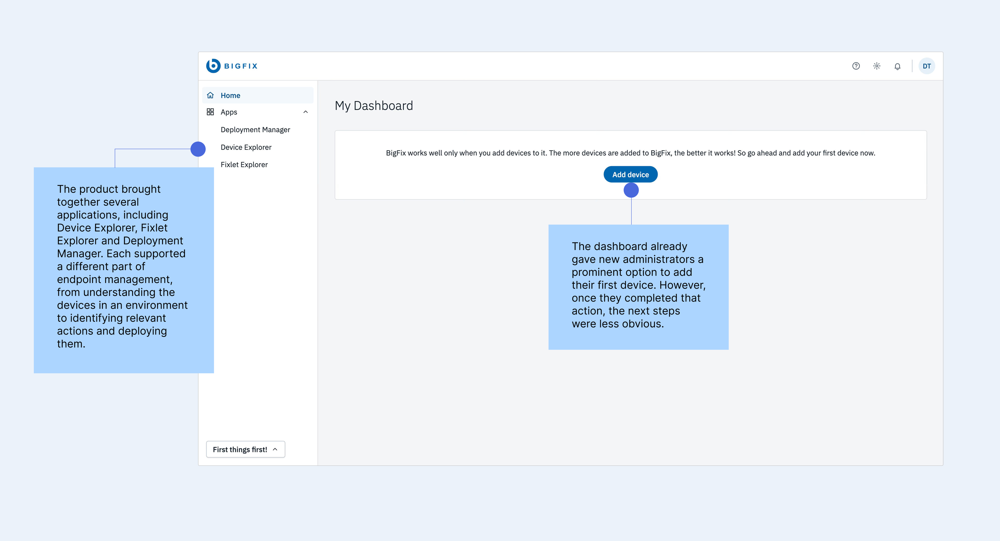
The dashboard already gave new administrators a prominent option to add their first device. However, once they completed that action, the next steps were less obvious. Users needed to discover how to find a relevant Fixlet, deploy it to a device, monitor the deployment and understand which application supported each part of the workflow. This raised an interesting question.
If the product was already designed to be intuitive, what additional value could onboarding provide? The research highlighted a gap between understanding how to operate an interface and knowing which actions would help users achieve their goals.
Users were often overwhelmed by feature-heavy introductions, while existing help resources lacked clear entry points. Information was available, but users needed more direction on what mattered during their first session.
Outcomes
The project established the first structured onboarding model for BigFix SaaS and helped shape how the team approached onboarding as a product capability.
Reusable guidance patterns
The checklist and contextual hotspot interactions established a consistent foundation for product guidance that could extend to additional workflows, roles and applications.
A phased onboarding strategy
The team's build-versus-buy evaluation resulted in a dual strategy, combining a lightweight, internally built onboarding experience for the initial release with a longer-term direction towards a third-party platform as onboarding needs expanded.
A foundation for measuring activation
Milestone completion, time to first device, time to first deployment, drop-off between tasks and feature adoption after onboarding were defined as the key signals.
My contribution was helping surface and evaluate the trade-offs around scalability, maintenance, engineering effort and long-term ownership through research and design exploration.
Since this was a zero-to-one initiative, I also considered how onboarding effectiveness could be measured as the product developed. Support requests, repeated setup attempts and qualitative feedback could help identify where users needed more guidance or were encountering technical difficulties. Together, these measures would help the team understand how effectively onboarding supported activation and where the experience needed further improvement.
Understanding what users needed from onboarding
Why I chose role-driven, task-based onboarding over a traditional product tour
Users felt overwhelmed by feature-heavy introductions
Design decision: I used progressive disclosure, introducing features through contextual hotspots when they became relevant to the task users were completing.
Users struggled to identify what to do first
Design decision: I created the First Things First checklist, organising onboarding into meaningful milestones with visible progress and clear next steps.
Different roles had different definitions of success
Design decision: I chose a role-driven framework where onboarding milestones could be tailored to each role's responsibilities and desired outcomes. For the initial release, I focused on the new administrator's journey, with a structure that could accommodate other roles as the product evolved.
Users had varying levels of product expertise
Design decision: I made onboarding flexible, allowing users to follow the complete journey, revisit individual milestones or skip guidance based on their familiarity with the product.
Help resources lacked clear entry points
Design decision: I integrated contextual help, documentation and video resources into relevant steps, keeping deeper instructions accessible within the workflow.
What this meant for my approach
These findings led me towards role-driven, task-based onboarding, where a user's responsibilities determined which tasks were prioritised.
For the initial release, I focused on helping a new administrator add their first device, deploy a Fixlet and confirm the result. This provided a clear path to first value while establishing a reusable framework that could support different roles and their respective goals as BigFix SaaS evolved.
Defining what first value should look like
I defined the initial activation goal around three connected actions.
Add a device → Deploy a Fixlet → Confirm that the deployment worked
This gave me a practical outcome to design towards and helped identify which capabilities users needed to discover first.
I translated the activation journey into five milestones.
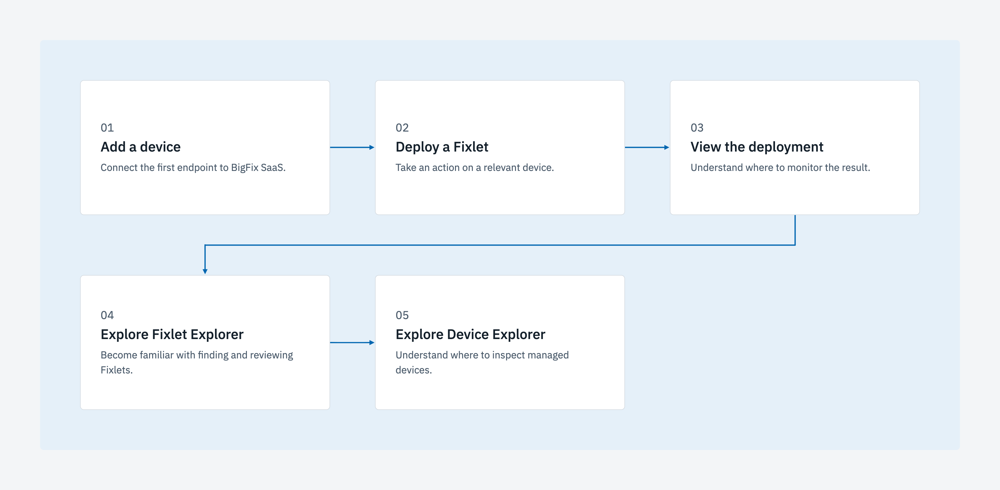
The first three milestones focused on completing a meaningful task, while the remaining two helped users become more familiar with the applications they would continue using.
Defining these milestones helped me focus the onboarding experience on what users needed to accomplish, while keeping the initial learning curve manageable.
How researching onboarding led me to think about product strategy
While researching onboarding approaches for BigFix SaaS, I explored how other B2B SaaS products helped users navigate complex workflows and how these experiences were built and maintained over time as product grows.
During this research, a question came up that I hadn't initially considered. Should we build our onboarding experience in-house or use a third-party solution?
I brought this question to my PM, which opened up a broader discussion about the long-term implications of both approaches. Building in-house would give the team greater control over the initial experience, but it would also require ongoing engineering effort as the product introduced new features, workflows and user roles. A third-party platform, on the other hand, could make onboarding easier to manage and scale, while bringing its own integration costs and dependencies.
As I explored these trade-offs, I began to understand how decisions about onboarding could influence engineering ownership, roadmap priorities and long-term product scalability. This was my introduction to thinking about product strategy as a designer, and it helped me see how research could inform decisions about the direction of the product.
The dual strategy
My findings contributed to the team's evaluation of both approaches, which eventually led to a dual strategy. For the initial SaaS release, the team chose to build a lightweight, purpose-built onboarding experience, with a longer-term direction towards adopting a third-party platform as the product grew. This balanced the need to deliver a focused experience for the first release with the flexibility to support more complex onboarding needs in the future.
Seeing how my research contributed to this decision was an important learning moment. It encouraged me to think more carefully about the relationship between user needs, technical feasibility and business priorities, and how I could bring those considerations into my design process earlier.
Introducing First Things First
I explored a checklist-based approach that could make the first few tasks visible from the beginning. I called it First Things First, reflecting the idea of helping administrators focus on the most useful actions during their initial experience. The checklist introduced all five milestones and showed which tasks had been completed, which one was currently active and what remained. It stayed accessible as users moved between applications, allowing them to return to the onboarding journey without losing track of their progress.
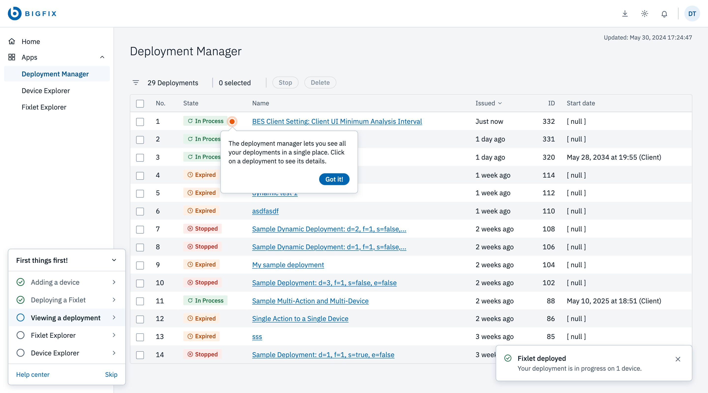
I designed the checklist around different stages of completion, from the initial introduction through partially completed tasks to the final completed state.
I also included direct access to relevant help resources and an option to skip the guided experience. This allowed new administrators to follow a structured journey while giving experienced users the flexibility to explore independently.
The checklist provided the overall structure. The next challenge was deciding how much guidance users needed within each milestone.
Designing guidance around real product tasks
Helping users add their first device
Most BigFix capabilities depended on having at least one managed device, so I kept adding a device as the first milestone.
The dashboard presented Add Device as the primary action, taking users into a setup flow where they could select the appropriate installer and follow the instructions required to connect their endpoint.
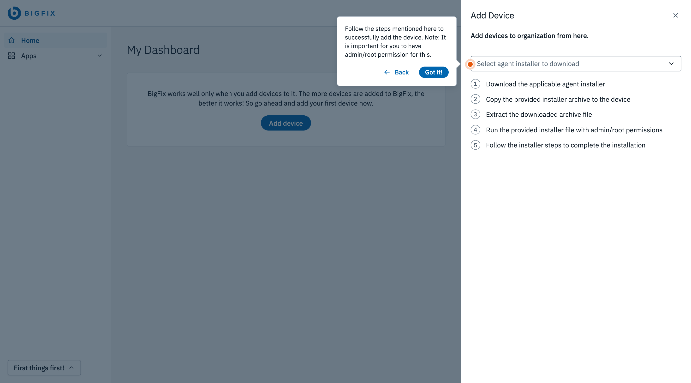
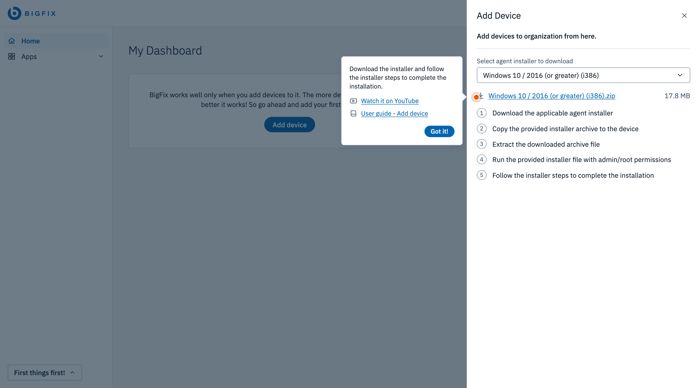
Because the installation involved technical steps, I provided access to a video and user guide for users who needed additional support. I wanted the primary interface to remain focused on the current action, with more detailed instructions available when required.
An important consideration was how the system would communicate completion. Downloading the installer was one step in the process, while the meaningful outcome occurred when the device successfully connected to the organisation.
I designed the success state around that event, confirming that the device was available, updating the checklist and introducing the next milestone.
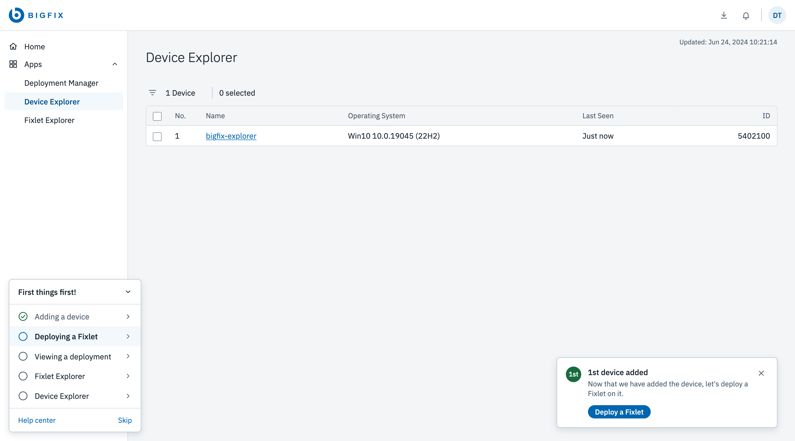
Connecting the system's success feedback to the onboarding checklist helped users understand what they had accomplished and where to go next.
Introducing applications when they became relevant
After adding their first device, users needed to move into another part of BigFix SaaS to continue.
I used the application switcher to introduce the different applications progressively, connecting each one to the task users were trying to complete.
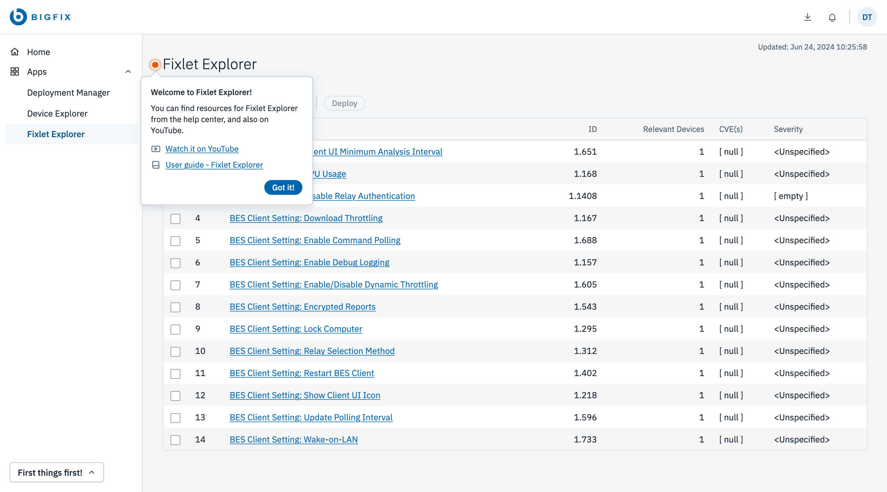
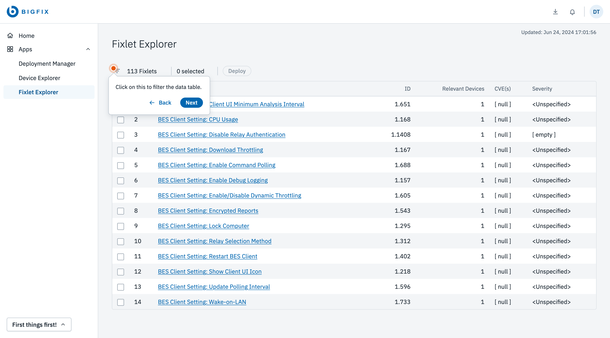
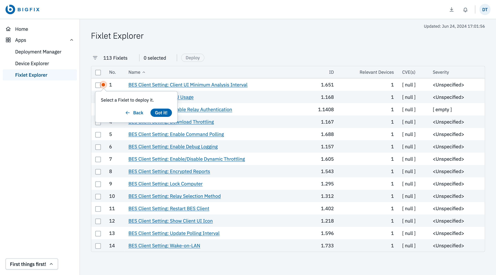
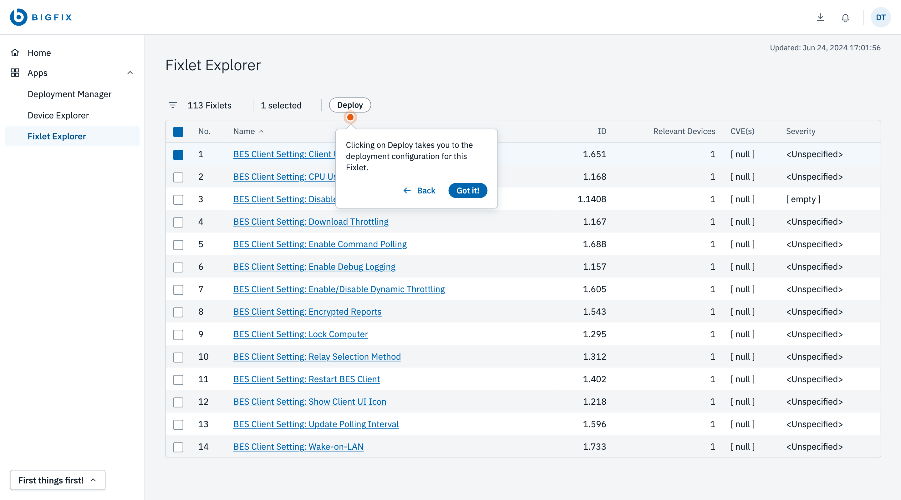
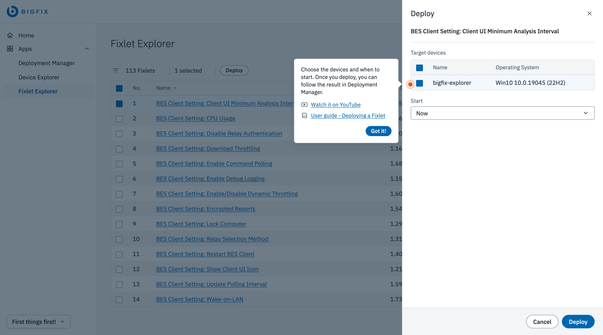
For example, when a user was ready to deploy their first Fixlet, the guidance introduced Fixlet Explorer and directed them towards the relevant workflow.
This allowed users to build an understanding of the applications through their work. I kept the initial explanations focused on what users needed at that moment, allowing more advanced capabilities to become part of later exploration.
Guiding users through their first Fixlet deployment
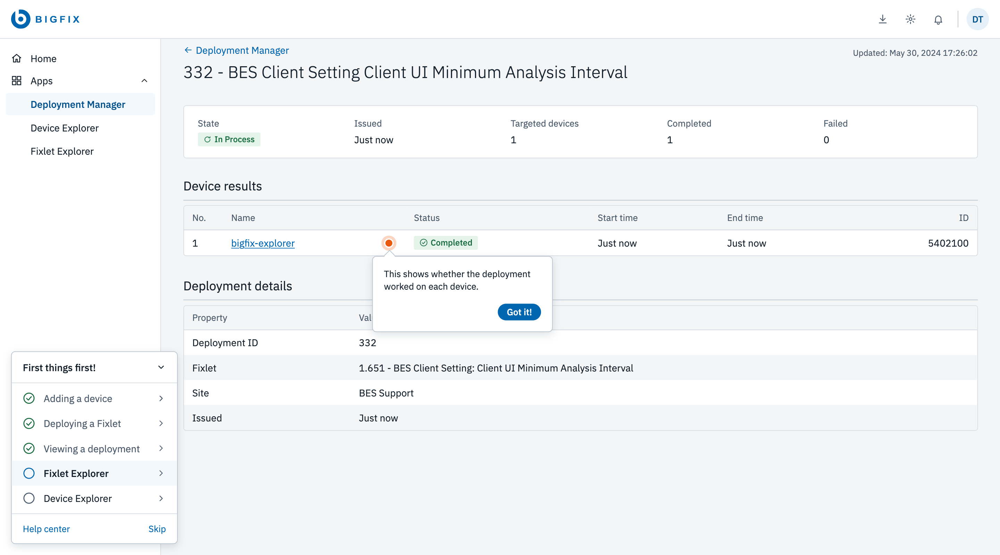
Creating a reusable guidance pattern
As I worked through the individual milestones, I noticed that similar guidance interactions were needed across several applications.
A navigation menu, a table filter and a deployment status required different explanations, but they could share the same interaction structure.
I designed a reusable hotspot component that could be anchored to an element in the interface. Each hotspot included a short instruction, navigation controls for moving between steps and a final Got It action. Where more detailed explanation was needed, users could access supporting documentation.
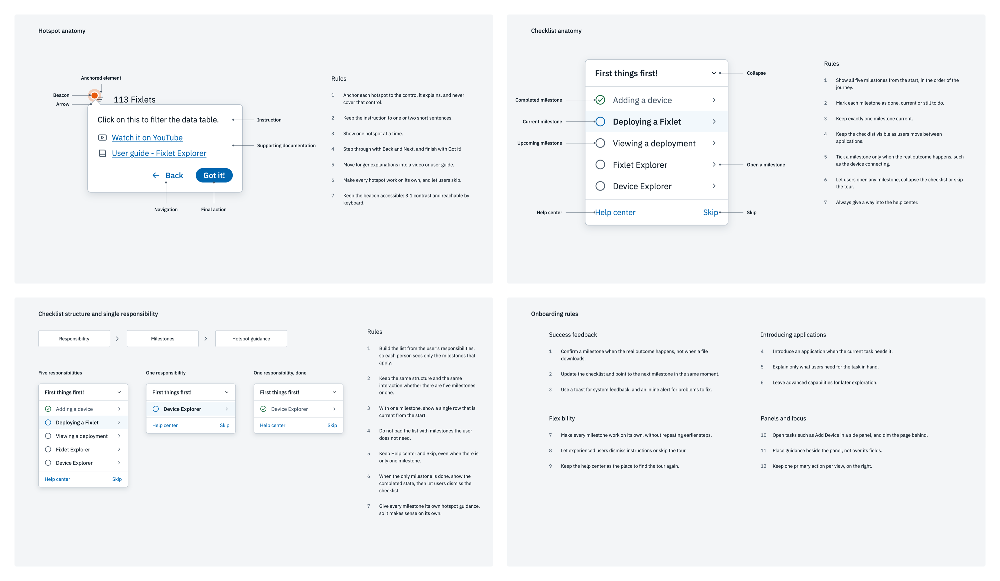
This gave me a consistent way to guide users through different interactions without introducing a separate component for every screen.
I also considered how easily these patterns could be extended to future onboarding tasks. Since the team had chosen a lightweight initial implementation, keeping the interaction model consistent helped define a focused set of behaviours for the first release.
The reusable patterns created consistency for users while providing a clearer foundation for future onboarding journeys and tooling decisions.
My takeaways
Starting with the user's goal makes onboarding more purposeful
Starting with the activation outcome helped me identify which capabilities mattered during the first session, how the milestones should connect and where additional support would be useful.
Thinking about scalability changes the design conversation
Exploring build versus buy pushed me to consider how the experience would be implemented, maintained and extended over time.
Small guidance decisions can shape the larger product experience
Designing onboarding across multiple applications made me more aware of how much users depend on continuity, feedback and clear next actions.